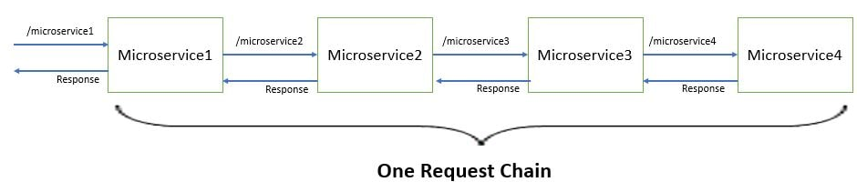
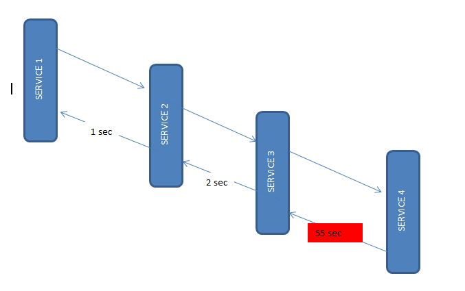

Spring Cloud Tutorial - Distributed Log Tracing using Sleuth and Zipkin Example
Microservices architecture involve multiple services which interact with each other. So a functionality may involve call to multiple microservices. Usually for systems developed using Microservices architecture, there are many microservices involved. These microservices collaborate with each other.
If suppose during such calls there are some issues like exception has occurred. Or may be there are latency issues due to a particular service taking more than expected time. How do we identify where the issue is occurring. In regular project we would have used logging to analyze the logs to know more about occurred exceptions and also performance timing. But since microservices involves multiple services we cannot use regular logging. Each Service will be having its own separate logs. So we will need to go through the logs of each service. Also how do we correlate the logs to a request call chain i.e which logs of microservices are related to Request1, which are related to Request2. To resolve these issues we make use of Spring Cloud Sleuth and Zipkin
- Spring Cloud Sleuth is used to generate and attach the trace id, span id to the logs so that these can then be used by tools like Zipkin and ELK for storage and analysis
- Zipkin is a distributed tracing system. It helps gather timing data needed to troubleshoot latency problems in service architectures. Features include both the collection and lookup of this data.
We will be dividing this tutorial into 3 parts-
- 1. Develop four Spring Boot Microservices modules which interact with each other.
- 2. Implement distributed tracing using Spring Cloud Sleuth
- 3. View distributed tracing using Zipkin
Develop four Spring Boot Microservices modules which interact with each other
We will be developing the spring boot microservices as follows-
1. Zipkin
Zipkin was originally developed at Twitter, based on a concept of a Google paper that described Google’s internally-built distributed app debugger – dapper. It manages both the collection and lookup of this data. To use Zipkin, applications are instrumented to report timing data to it.
If you are troubleshooting latency problems or errors in an ecosystem, you can filter or sort all traces based on the application, length of trace, annotation, or timestamp. By analyzing these traces, you can decide which components are not performing as per expectations, and you can fix them.
Internally it has 4 modules –
- Collector – Once any component sends the trace data, it arrives to Zipkin collector daemon. Here the trace data is validated, stored, and indexed for lookups by the Zipkin collector.
- Storage – This module store and index the lookup data in backend. Cassandra, ElasticSearch and MySQL are supported.
- Search – This module provides a simple JSON API for finding and retrieving traces stored in backend. The primary consumer of this API is the Web UI.
- Web UI – A very nice UI interface for viewing traces.
1.1. Installing Zipkin
Detailed installation steps can be found for different operating systems including the Docker image on the quickstart page. For windows installation, just download the latest Zipkin server from the maven repository and run the executable jar file using the below command.
Start Zipkin on Windowsjava -jar zipkin-server-1.30.3-exec.jar
Once Zipkin is started, we can see the Web UI at http://localhost:9411/zipkin/.
The above command will start the Zipkin server with the default configuration. For advanced configuration, we can configure many other things like storage, collector listeners etc.
To install Zipkin in the spring boot application, we need to add Zipkin starter dependency.
pom.xml<dependency> <groupId>org.springframework.cloud</groupId> <artifactId>spring-cloud-starter-zipkin</artifactId> </dependency>
2. Sleuth
Sleuth is another tool from the Spring cloud family. It is used to generate the trace id, span id and add this information to the service calls in the headers and MDC, so that It can be used by tools like Zipkin and ELK etc. to store, index and process log files.
As it is from the spring cloud family, once added to the CLASSPATH, it
automatically integrated to the common communication channels like –
- requests made with the RestTemplate etc.
- requests that pass through a Netflix Zuul microproxy
- HTTP headers received at Spring MVC controllers
- requests over messaging technologies like Apache Kafka or RabbitMQ etc.
Using Sleuth is very easy. We just need to add it’s started pom in the spring boot project. It will add the Sleuth to the project and so in its runtime.
pom.xml<dependency> <groupId>org.springframework.cloud</groupId> <artifactId>spring-cloud-starter-sleuth</artifactId> </dependency>
So far we have integrated Zipkin and Sleuth to microservices and ran the Zipkin server. Let’s see how to utilize this setup.
3. Zipkin and Sleuth Integration
For this demo, let us create 4 spring boot based microservices. They all will have both Zipkin and Sleuth starter dependencies.
In each microservice, we will expose one endpoint and from the first service we will call the second service, and from the second service, we will invoke the third and so on using the RestTemplate.
And as we have already mentioned, Sleuth works automatically with resttemplate so it would send this instrumented service call information to the attached Zipkin server. Zipkin will then start the book keeping of latency calculation along with a few other statistics like service call details.
3.1. Creating Microservices
All four services will have the same configuration, the only difference is the service invocation details where the endpoint changes. Let’s create Spring boot applications with Web, Rest Repository, Zipkin and Sleuth dependencies.
I have packaged those services inside a parent project so that those four services can be built together to save time. You can proceed with individual setup if you wish to. Also, I have added useful windows scripts to start/stop all the services with a single command.
This is one sample rest controller which exposes one endpoint and also invokes one downstream service using the RestTemplate. Also, we are using Sampler.ALWAYS_SAMPLE that traces each action.
Service 1package com.example.zipkinservice1; import brave.sampler.Sampler; import org.apache.log4j.Logger; import org.springframework.beans.factory.annotation.Autowired; import org.springframework.boot.SpringApplication; import org.springframework.boot.autoconfigure.SpringBootApplication; import org.springframework.context.annotation.Bean; import org.springframework.core.ParameterizedTypeReference; import org.springframework.http.HttpMethod; import org.springframework.web.bind.annotation.GetMapping; import org.springframework.web.bind.annotation.RestController; import org.springframework.web.client.RestTemplate; @SpringBootApplication public class ZipkinService1Application { public static void main(String[] args) { SpringApplication.run(ZipkinService1Application.class, args); } } @RestController class ZipkinController { private static final Logger LOG = Logger.getLogger(ZipkinController.class.getName()); @Autowired RestTemplate restTemplate; @Bean public RestTemplate getRestTemplate() { return new RestTemplate(); } @Bean public Sampler alwaysSampler() { return Sampler.ALWAYS_SAMPLE; } @GetMapping(value="/zipkin") public String zipkinService1() { LOG.info("Inside zipkinService 1.."); String response = (String) restTemplate.exchange("http://localhost:8082/zipkin2", HttpMethod.GET, null, new ParameterizedTypeReference<String>() {}) .getBody(); return "Hi..."; } }
3.2. Appication Configuration
As all services will run in a single machine, so we need to run them in different ports. Also to identify in Zipkin, we need to give proper names. so configure THE application name and port information in application.properties file under the resources folder.
application.properties
server.port = 8081
spring.application.name = zipkin-server1
Similarly, for the other 3 services, we will use ports 8082, 8083, 8084 and their name will also be zipkin-server2, zipkin-server3 and zipkin-server4.
Also, we have intentionally introduced a delay in the last service so that we can view that in Zipkin.